유통관리사-2급 (2013-04-28 기출문제)
1과목: 유통물류일반
1. 소비자기본법상 국가 및 지방단체가 소비자의 능력향상을 위해 힘써야 할 내용과 가장 거리가 먼 것은?
- 경제 및 사회의 발전에 따라 소비자의 능력 향상을 위한 프로그램을 개발하여야 한다.
- 소비자가 자신의 선택에 책임을 지는 소비생활을 할 수 있도록 필요한 교육을 하여야 한다.
- 물품 등으로 인하여 소비자에게 생명.신체 또는 재산에 대한 위해가 발생하지 아니하도록 필요한 조치를 강구하여야 한다.
- 소비자교육과 학교교육을 연계하여 교육적 효과를 높이기 위한 시책을 수립하고 시행하여야 한다.
- 소비자의 능력을 효과적으로 향상시키기 위한 방법으로 방송사업을 할 수 있다.
(정답률: 45%)

2. 재고관리에 대한 내용 중 가장 옳지 않은 것은?
- 재고관리란 적량.적질의 자재(원자재, 부분품, 소모품, 공구, 연료, 저장품, 반제품, 상품, 제품 등의 회계학상 재고자산)를 구입내지 획득하여 이를 필요로 하는 부서(적소)에 적기에 조달(배분) 하는 기능을 말한다.
- 재고관리란 고객의 수요를 만족시키고 생산자의 생산조건을 고려하여 필요한 수량의 상품을 보관하는 활동으로 기업의 재무관리에 중요한 요인이 되고 있다.
- 기업에서 재고관리활동은 기업이 보유하고 있는 각종 제품.반제품.원재료.상품.공구.사무용품 등의 재화를 합리적, 경제적으로 유지하기 위한 활동이다.
- 재고관리의 의미는 단순히 물품의 수ㆍ발주를 중심 으로 한 재고관리와 경영적 관점에서 본 재고관리의 양면성을 갖고 있다.
- 경영적 관점에서 본 재고관리는 일반적인 경영계획의 일환으로 발주량과 발주시점을 결정하며, 시간으로 발주.납품(입고).출고.이동.조정.기록 등의 업무를 수행하는 것이다.
(정답률: 46%)
3. 수직적 마케팅 시스템을 경로 구성원의 통합화된 정도가 낮은 수준에서 높은 수준의 순서로 나타낸 것은?
- 계약형 VMS < 기업형 VMS < 관리형 VMS
- 기업형 VMS < 계약형 VMS < 관리형 VMS
- 계약형 VMS < 관리형 VMS < 기업형 VMS
- 관리형 VMS < 계약형 VMS < 기업형 VMS
- 기업형 VMS < 관리형 VMS < 계약형 VMS
(정답률: 37%)
4. 기업의 사회적 책임에 대한 내용 중 옳지 않은 것은?
- 기업의 사회적 책임은 근본적으로 합법성과 책임감의 두 가지 차원으로 구성된다.
- 성공적인 기업이 되려면 약속한 것을 고객에게 잘 전달해서 고객을 만족시켜야 한다.
- 사회에 대한 책임의 일환으로 세금을 내기도 한다.
- 현금기부와 제품기증은 전략적 기증이고, 자선행위는 자원봉사활동으로 분류된다.
- 최고경영자의 윤리적인 말과 행동으로 솔선수범하는 것을 윤리적 리더십이라고 한다.
(정답률: 52%)
5. 물류비에 대한 내용 중 가장 옳지 않은 것은?
- 원산지로부터 소비자까지의 조달, 사내 및 판매, 재고의 전 과정을 계획, 실행, 통제하는데 소요되는 비용을 말한다.
- 일반 기준에 의한 물류비의 과목 분류는 영역별, 기능별, 자가∙위탁별, 세목별, 관리항목별로 구분 된다.
- 영역별 물류비는 기업경영의 주요 영역 중 어느 영역에서 발생한 물류비인가를 식별하여 조달물류비, 사내물류비, 판매물류비 등으로 분류한다.
- 기능별 물류비는 기업이 가치를 창출하기 위해 필요한 물류활동을 기능별로 재료비, 노무비, 경비, 이자 등으로 분류한다.
- 관리항목별 물류비는 중점적으로 물류비 관리를 실시하기 위한 관리대상, 예를 들어 제품별, 지역별, 고객별 등과 같은 특정의 관리단위별로 분류 하는 것을 말한다.
(정답률: 47%)
6. 전략적 제휴에 대한 내용 중 가장 옳지 않은 것은?
- 상호협력을 바탕으로 기술.생산.자본 등의 기업 기능에 2개 또는 다수의 기업이 기능별로 협력하는 것을 말한다.
- 기술혁신 속도가 빠른 전기.전자 등 첨단제조 분 야에서 신기술 습득과 새로운 시장 진출을 목적으로 활발하게 이루어지고 있으며, 최근 은행∙보험∙항공∙운송 등의 다양한 분야에서 활용도가 높아지고 있다.
- 기업간 합병형태나 독립기업간의 외부거래보다 필요로 하는 기술이나 능력을 얻는데 효과적이고 저렴하며 목적달성 후에도 철수가 비교적 용이하다.
- 규모의 경제성 추구, 위험 및 투자비용의 분산, 경쟁우위 자산의 보완적 공유, 기술획득, 시장의 신규진입과 확대, 과다한 경쟁방지 등이 전략적 제휴의 동기이다.
- 비핵심적이고 반복적인 프로세스는 외주로 하고 단순 비용절감이 아닌 핵심역량에 집중하기 위한것이다.
(정답률: 63%)
7. 다음 설명에 해당하는 소매점을 고르시오.
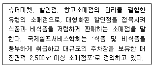
- 편의점(Convenience store)
- 전문할인점(Special discount store)
- 하이퍼마켓(Hypermarket)
- 종합슈퍼마켓(General super market)
- 오프 프라이스 스토어(Off-price store)
(정답률: 51%)
8. 물류관리에 관한 용어 중 가장 올바른 설명은?
- CR(Continuous Replenishment)은 상품을 소비자수요에 기초하여 유통소매점에 공급하는 push방식을 사용하여 효율을 높일 수 있다.
- QRDS(Quick Response Delivery System)는 생산업체와 공급업체의 리드타임을 줄이기 위한 재고관리시스템이다.
- ECR(Efficient Consumer Response)은 미국 패션산업의 유통기관과 제조업체의 밀접한 제휴에서 시작되었다.
- CPFR (Collaborating, Planning, Forecasting, and Replenishment) 은 소매업체가 정보를 벤더와 공유하도록 하는 협력계획, 수요예측, 보충 등의 기능을 수행하는 시스템이다.
- VMI(Vendor Managed Inventory)는 소매업체에 의한 발주단위를 정확하게 계산할 수 있게 한다.
(정답률: 27%)
9. 다음 상황에서 법적.윤리적 문제는 있지만, A소매업체가 C공급업체의 입점욕구를 수용하고 잘 팔리지 않은 B공급 업체의 상품을 일시에 해결할 수 있는 방법은?
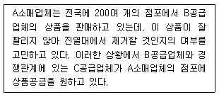
- 입점비(slotting allowances)
- 역청구(chargebacks)
- 거래거절(refusals to deal)
- 역매입(buybacks)
- 구속적 예약(tying contracts)
(정답률: 49%)
10. 제조업자가 재판매가격유지(resale price maintenance)를 하려는 경영상의 이유로 가장 거리가 먼 것은?
- 자사 상품을 손실유도품으로 사용하려는 유통업자의 시도를 방지하기 위하여
- 경로구성원의 신용을 얻기 위해
- 상표를 진입시키기 위한 방안으로써 경로구성원들을 촉진시키기 위해
- 할인경쟁에서 유리한 소매업체에게 인센티브를 제공하기 위해
- 상표를 할인하지 않는 우수한 소매점포를 통한 판매로 소비자에게 품질보증을 하기 위해
(정답률: 48%)
11. 소매업체의 부채와 소유주 지분에 대한 설명으로 가장 옳지 않은 것은?
- 외상매입금은 유동부채로 먼저 상품 공급업체에 갚아야 할 금액을 말한다.
- 고정부채로 1년경과 후에 갚아야 될 채무에 증식 부채가 있다.
- 소유주 지분은 총자산에서 총부채를 제외한 자산의 양이다.
- 지급어음은 소매업체가 1년 내에 은행에 지급해야할 채무의 원금과 이자이다.
- 가장 일반적인 소유주지분은 보통주와 이익잉여금이다.
(정답률: 31%)
12. 유통경로의 분류기능에 관한 설명 중 옳지 않은 것은?
- 등급의 예는 귤을 크기와 보관 상태에 따라 구분하는 것이다.
- 분류기능을 수행함으로써 중간상은 형태, 소유, 시간, 장소 등의 효용을 창출한다.
- 분배는 대체로 생산자에서 소비자에 이르는 유통 과정에 있어 중요한 기능이라 할 수 있다.
- 수합은 다양한 공급원으로부터 소규모로 제공되는 동질적인 제품들을 한데 모아 대규모 공급이 가능하게 만드는 것이다.
- 구색화는 소매상이 소비자가 원하는 구매단위로 나누어 판매하는 것을 말한다.
(정답률: 41%)
13. 소매기관의 발전과정을 설명하기 위한 변증법적 과정이 론에 대한 내용으로 가장 거리가 먼 것은?
- 전문점, 백화점이 ‘정’이라면 카테고리 전문점은 ‘반’이 되고 종합할인점은 ‘합’이 된다.
- 전문점은 고마진, 저회전율, 고가격, 상대적으로 좁은 상품의 폭과 깊은 구색을 갖는다고 본다.
- 종합할인점은 전문점에 비해 저마진, 저서비스 수준을 갖고 상대적으로 상품의 다양성을 지닌다고 본다.
- 새로운 소매기관들은 다른 경쟁업체들로부터 특징들을 차용하는 점포에서 발생한다.
- 카테고리킬러의 경우 전문점에 비해 낮은 가격을 추구하고, 종합유통점에 비해 제한된 서비스의 제공과 깊은 상품의 구색을 지닌다.
(정답률: 29%)
14. 보관의 원칙에 대한 설명으로 가장 거리가 먼 것은?
- 높이 쌓기의 원칙: 물품을 고층으로 적재하는 것으로 평적보다 파렛트 등을 이용하여 용적효율을 향상시키는 원칙
- 위치표시의 원칙: 보관품의 장소, 선반 번호 등의 위치를 표시함으로써 업무의 효율을 높이는 원칙
- 명료성의 원칙: 시각적으로 보관품을 용이하게 식별할 수 있도록 보관하는 원칙
- 네트워크 보관의 원칙: 물품의 정리와 출고가 용이하도록 관련 품목을 한 장소에 모아서 보관하는 원칙
- 통로대면 보관의 원칙: 보관할 물품의 장소를 회전 정도에 따라 정하는 것으로, 입출하 빈도의 정도에 따라 보관장소를 결정하는 원칙
(정답률: 44%)
15. 유통산업발전법(2012.9.2. 시행) 및 동법 시행령(2012.5.1. 시행)에서 규정한 용어에 대한 설명으로 가장 올바른 것은?
- 매장은 상품의 판매와 이를 지원하는 용역의 제공에 직접 사용되는 장소를 말하며, 바닥면적이 1천제곱미터 미만인 수퍼마켓과 일용품 등의 소매점을 포함한다.
- 매장면적의 합계가 2천제곱미터 이상이고 상시운영되는 매장은 모두 대규모점포에 해당한다.
- 대규모점포를 경영하는 회사 또는 그 계열회사가 직영하는 점포 중에서 상호출자제한기업집단의 계열회사가 직영하는 점포는 준대규모점포라 한다.
- 같은 업종의 여러 소매점포를 직영하거나 같은 업종의 여러 소매점포에 대하여 계속적으로 경영을 지도하고 상품원재료 또는 용역을 공급하는 사업을 체인사업이라 한다.
- 2천제곱미터 이내의 가로(길거리) 또는 지하도에 30개 이상의 점포(도매점포는 제외) 또는 용역점포가 밀집하여 있는 지구를 상점가라 한다.
(정답률: 48%)
16. 3가지 유통전략적 대안과 그에 맞는 상품 예를 가~다 의순서대로 가장 바르게 연결한 것은?
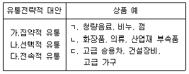
- ㄱ, ㄴ, ㄷ
- ㄱ, ㄷ, ㄴ
- ㄴ, ㄱ, ㄷ
- ㄷ, ㄴ, ㄱ
- ㄷ, ㄱ, ㄴ
(정답률: 48%)
17. 상품에 대한 탄력성의 개념으로 가장 올바른 것은?
- 소득이 높아짐에 따라 수요량도 증가하면 수요의 소득탄력성은 0보다 작다.
- 상품 A의 가격이 상승하여 상품 B의 판매량이 증가하는 경우, 교차탄력성은 0보다 크므로 상품 A와 상품 B는 보완관계에 있다.
- 상품이 열등재인 경우에 그 상품의 수요곡선은 음(-)의 기울기를 갖는다.
- 수요의 가격탄력성이 탄력적일 경우, 가격이 상승하면 총매출액은 감소하고 가격이 하락하면 총매출액은 증가한다.
- 수요곡선이 선형인 경우에는 수요곡선 상의 위치와 관계없이 가격탄력성이 같지만, 비선형이면 수요곡선 상의 위치에 따라 가격탄력성이 달라진다.
(정답률: 47%)
18. 단품관리의 방법에서 주기적 관찰이 주기적 실사에 비해 유리한 경우만 나열된 것은?
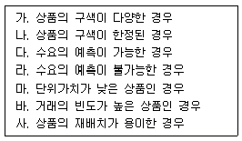
- 가, 다, 마
- 나, 라, 마
- 가, 다, 바
- 나, 라, 바
- 나, 라, 사
(정답률: 24%)
19. 유통기업의 전략으로 올바른 것만 나열한 것은?
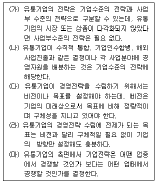
- 가, 나, 다
- 가, 나, 마
- 나, 다, 라
- 나, 다, 마
- 다, 라, 마
(정답률: 26%)
20. 유통경로에 대한 설명으로 가장 거리가 먼 것은?
- 일단 구축되면 이를 변경하기가 용이하지 않으므로 마케팅 4P-믹스 구성요소 중 가장 신중한 관리가 필요하다.
- 고객이 제품이나 서비스를 사용 또는 소비하는 과정에 참여하는 독립적인 조직들의 집합체로서, 경로구성원은 자신의 활동을 수행함에 있어 다른 경로구성원에 독립되어 있어 효율적이다.
- 유통경로 내의 중간상은 제조업체로부터 공급받은 제품을 그대로 소비자에게 전달하는 단순한 역할을 수행하는 것이 아니라 제품이 지닌 가치에 새로운 가치를 추가하는 역할을 수행한다.
- 유통경로 내의 중간상은 제품의 구매와 판매에 필요한 정보탐색의 노력을 감소시켜 주고, 제조업자와 소비자의 기대 차이를 조정해 준다.
- 유통경로 내의 중간상은 반복적인 거래를 가능하게 함으로써 구매와 판매를 보다 용이하게 해주고, 교환과정에 있어 거래비용 및 거래횟수를 줄임으로써 효율성을 높여준다.
(정답률: 35%)
21. 물류활동에 따라 영역별로 아래의 특징을 보이는 물류는 무엇인가?
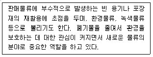
- 조달물류(Inbound Logistics)
- 생산물류(Manufacture Logistics)
- 반품물류(Reverse Logistics)
- 회수물류(Recycle Logistics)
- 폐기물류(Scrapped Logistics)
(정답률: 50%)
22. 제3자 물류(3PL)에 대한 설명으로 가장 틀린 내용은?
- 물류경로 내의 대행자 또는 매개자를 의미하며, 화주와 단일 혹은 복수의 제3자가 일정 기간 동안 일정 비용으로 일정 서비스를 상호 합의하에 수행하는 과정을 말한다.
- 제조업체가 이용하는 전략적 동기는 아웃소싱, 부가가치물류, 물류제휴효과 등을 기대하기 때문이다.
- 물류관련 자산비용의 부담이 줄어들 수 있으므로 비용절감, 고객서비스 향상, 핵심사업 분야 집중을 통한 기업경쟁력 향상 등을 기대할 수 있다.
- 화주기업이 고객서비스향상, 물류비절감, 효율적 물류활동 등의 목표를 달성할 수 있도록 물류경로 내의 다른 주체와 일시적이거나 장기적인 관계를 맺는 것을 말한다.
- 물류업무 수행능력 및 정보기술, 컨설팅 능력을 보유한 업체가 공급망상의 모든 활동에 대한 계획과 관리를 전담하여, 다수 물류업체의 운영 및 관리를 최적화함으로써 생산자와 유통업체 간에 효율화를 도모한다.
(정답률: 33%)
23. 기업이 다각화전략을 추진하는 이유에 대한 설명으로 가장 옳지 않은 것은?
- 보유한 능력과 자원을 새로운 업태 혹은 다른 업종의 사업에 투자함으로써 기존의 자원과 능력을확장 또는 발전시킬 수 있기 때문이다.
- 동일 기업 내의 여러 사업체가 공동으로 활용하거나 축적된 경영노하우 및 관리시스템 등의 기능을 서로 보완하여 활용하는 경우 상승효과가 발생한다.
- 개별 사업부문의 경기순환에서 오는 위험을 분산시킬 수 있는 수단이 되며, 기존사업의 성장이 둔화되거나 점차 쇠퇴해 감에 따라 새로운 사업 분야로 진출할 필요성이 대두되기 때문이다.
- 기술 또는 브랜드와 같은 많은 무형의 경영자원을 확보하고 있는 경우, 이를 활용할 수 있는 비관련사업으로 다각화를 하는 것이 범위의 경제성을 활용하여 수익률을 증대시킬 수 있기 때문이다.
- 복합기업화가 이루어지면 시장지배력 증가에 도움이 되며, 다양한 사업 분야에 진출함으로써 기업경영상의 유연성 제고와 사업의 포트폴리오를 추구할 수 있기 때문이다.
(정답률: 39%)
24. 파레트 풀 시스템(pallet pool system)의 경제적 이점이라고 보기 어려운 것은?
- 상품규격과 파레트규격을 잘 일치시켜 하역비용을 크게 줄일 수 있다.
- 사용자가 직접 파레트를 반환하기 때문에 시스템 운영자의 팔레트 회수에 대한 노력이 감소한다.
- 지역이나 계절 변화에 따른 파레트의 수급변동에 잘 대응할 수 있다.
- 파레트를 직접 보유하지 않아 파레트 관리에 소요되는 비용을 절감시킬 수 있다.
- 기업의 파레트 수요에 맞춰 대출하고 불필요시 반환받기 때문에 파레트 수급의 탄력성에 잘 대응할 수 있다.
(정답률: 15%)
25. 다음이 설명하는 도매상의 유형을 순서대로 나열한 것은?
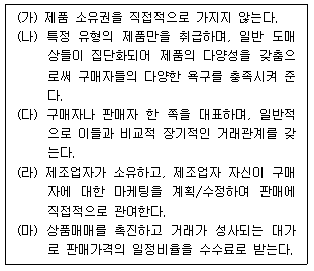
- 대리점, 전문도매상, 대리점, 제조업자도매상, 대리점
- 전문도매상, 대리점, 브로커, 제조업자도매상, 대리점
- 대리점, 브로커, 전문도매상, 제조업자도매상, 대리점
- 제조업자도매상, 전문도매상, 대리점, 대리점, 대리점
- 대리점, 전문도매상, 브로커, 제조업자도매상, 대리점
(정답률: 30%)
2과목: 상권분석
26. 키오스크에 대한 올바른 설명만을 나열한 것은?
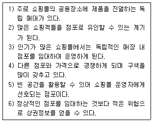
- 1, 2, 3
- 1, 5, 6
- 2, 4, 5
- 3, 4, 6
- 4, 5, 6
(정답률: 33%)
27. 귀금속상점이나 떡볶이 가게들이 몰려있어 엄청난 집객력을 갖는 경우 어느 입지원칙에 대한 상황인가?
- 동반유인원칙
- 보충가능성의 원칙
- 고객차단원칙
- 점포밀집원칙
- 접근가능성의 원칙
(정답률: 30%)
28. 의사결정에 사용되는 요소에 인구가 포함되지 않는 모형은?
- 상권의 분기점을 찾아내는 컨버스의 제1법칙
- 실질적 환경을 고려한 케인의 흡인력 모형
- 제1법칙을 수정한 컨버스의 제2법칙
- 소규모 도시의 상권을 정의한 레일리의 소매인력 법칙
- 이동시간으로 상권범위를 설명하는 애플바움의 법칙
(정답률: 35%)
29. 넬슨(R. L. Nelson)이 제시한 입지선정의 원칙에서 긍정적으로 평가되는 요인에 대한 설명 중 거리가 먼 것은?
- 관할 상권내에서 취급하는 상품, 점포 또는 유통단지의 수익성 확보 가능성 정도
- 점포가 많이 몰려 있어 고객을 끌어 들일 수 있는 정도
- 고립되어 있는 상권에 위치하여 다른 상권으로 고객이 유출되지 않는 독점성 정도
- 경쟁점의 입지, 규모, 형태 등을 감안하여 자기점포가 기존 점포와의 경쟁에서 우위를 확보할 수 있는 가능성 정도
- 입지의 가격 및 비용 등으로 인한 수익성 및 생산성 정도
(정답률: 50%)
30. 크리스탈러(W. Christaller)에 의해 제안되고 로쉬(A.Löch)에 의해 발전된 중심지이론에 대한 설명으로 가장 올바른 것은?
- 도시 중심 기능의 수행정도는 그 도시의 인구 규모에 비례한다.
- 중심도시를 둘러싼 배후상권의 규모는 도시규모에 반비례한다.
- 상업중심지가 하나일 때 중심기능을 제공받는 이상적 배후 모양은 육각형이다.
- 중심지 기능의 도달거리는 최소수요 중심거리를 초과하는 공간구조이다.
- 최대도달거리가 최소수요 충족거리보다 작아야 상업시설이 입지할 수 있다.
(정답률: 24%)
31. 대형 소매점의 출점형태 중 점포확보를 위한 비용은 상대적으로 낮은 편이고 지속적 영업도 가능하다는 장점은 있지만, 입지여건이나 점포구조 등이 이미 정해져 있어 출점조건이 열악할 가능성이 높다는 단점을 가진 것은?
- 부지를 임차하고 건물을 신축한 후 입점
- 이미 출점되어 있는 기존점포를 인수
- 부지를 매입하고 건물을 신축한 후 입점
- 출점한 경험이 있는 기업과 제휴후 출점
- 건물을 임차하여 새롭게 점포를 단장한 후 출점
(정답률: 36%)
32. 상권조사에 대한 설명 중 적절치 못한 것은?
- 자료조사는 저렴한 비용으로 필요 정보를 효율적이고 신속하게 구할 수 있도록 자료에 대한 신뢰성을 확보하는 것이 좋다.
- 실지조사는 점두조사, 호별방문조사, 경쟁점조사등과 같이 상권의 파악 및 도로구조와 지역 특성을 분석하는 경우가 많으며, 대부분은 입지조건 분석을 위해 행한다.
- 점두조사는 표본집단을 임의로 구성하고 조사대상을 추출한 후 조사대상의 행위를 지속적으로 관찰함으로써 구매습관을 시계열로 측정하는 방법이다.
- 경쟁조사는 경쟁대상이 되는 점포나 쇼핑센터를 선정하여 시설현황, 상품구성, 영업전략, 홍보전략 등을 조사한다.
- 호별방문조사는 지도상에 설정한 상권 내에서 표본조사의 대상이 되는 세대를 추출하여 조사하는 것으로 일반적으로 표본수가 많을수록 좋다.
(정답률: 35%)
33. 출점할 점포에 대한 부지조사의 기본항목과 가장 거리가 먼 것은?
- 소유권, 소유자의 신용, 거래당사자의 법적 자격
- 토지대장, 실제 측정도, 도시계획도, 등기부등본 등 면적.형태.지목
- 수로, 고압선, 마을길 등의 장애물
- 점포를 건설할 건설회사
- 상하수도, 전력, 가스 등 공공시설 현황
(정답률: 50%)
34. 소매포화지수(IRS: Index of Retail Saturation)의 설명으로 가장 적절하지 않은 것은?
- 점포가 비슷한 전통적인 수퍼마켓 등은 적용이 용이하지만 스포츠용품이나 가구점 등 전문화된 점포에는 적용이 어렵다.
- 지역시장의 총 가구 수＝250가구, 특정업태의 총매장면적＝100m2, 가구당 특정업태에 대한 지출＝150,000원이라면 IRS＝375,000원이 된다.
- 해당지역의 잠재적인 판매규모를 잘 예측해야 적정한 수준의 매장규모를 선택할 수 있기 때문에 IRS를 활용하게 된다.
- 거주자들이 지역시장 밖에서의 쇼핑정도나 수요를 포함시킬 수 있으며, 경쟁의 질적인 측면과 양적인 측면을 모두 고려할 수 있는 방법이다.
- 소매 구매력의 조사 및 수요측정지표로 가구구성원의 연령, 구성원 수, 인구밀도, 유동성 등을 고려한다.
(정답률: 26%)
35. 점포운영의 한 형태인 노면 독립입지(Freestanding Sites)에 대한 설명으로 가장 적절하지 않은 것은?
- 여러 업종의 점포가 한곳에 모여 있는 군집 입지와 달리, 전혀 점포가 없는 곳에 독립하여 점포를 운영하는 독립입지 소매점은 다른 소매업체들과 고객을 공유하기 어렵다.
- 주거, 업무, 여가 등 다수의 용도가 물리적, 기능적으로 복합된 건물을 말하며, 상권을 조성하기 위한 단순한 개발방법이 아닌 상권과 함께 생활에 필요한 여러 편의시설을 복합적으로 개발하기 위한 방법이다.
- 중심시가지 보다 토지 및 건물의 가격이 싸고, 대형점포를 개설할 경우 소비자의 일괄구매를 가능하게 하지만, 비교구매를 원하는 소비자에게는 그 다지 매력적이지 않다.
- 다른 업체보다 비교 우위가 있는 확실한 기술력을 보유한 전문성이 있는 업종이나 다른 업체와 비교하여 뛰어난 마케팅능력을 보유하고 있는 업종이 적합하다.
- 뚱뚱한 사람들에게 맞는 청바지를 파는 차별화된 점포와 특정 상권 안에서 가장 낮은 가격으로 식품을 판매하는 대형 슈퍼마켓, 수많은 종류의 장난감을 판매하는 카테고리 킬러 등과 같은 목적 점포가 적합하다.
(정답률: 40%)
36. 시장력이 약한 상태에서 경비절감을 목적으로 출점입지를 특정지역으로 한정하여 그곳에 집중적으로 점포를 개설하는 출점전략은?
- 인지도 우선 전략
- 다각화 전략
- 도미넌트 전략
- 브랜드 전략
- 시장력 선택전략
(정답률: 29%)
37. 도심 입지(CBD: Central Business District)는 대도시와 중.소도시의 전통적인 도심 상업지역을 말한다. 도심입지에 대한 설명으로 가장 옳지 않은 것은?
- 고급 백화점, 고급 전문점 등이 입지하고 있는 전통적인 상업 집적지로, 다양한 분야에 걸쳐 고객 흡입력을 지닌다.
- 도심 입지는 다양한 계층의 사람들이 왕래하며 오피스타운이 인근지역에 발달해 있고 지가와 임대료가 상대적으로 비싸다.
- 도심 입지는 최근에 부도심과 외곽도심의 급격한 발달, 중상류층의 거주지 이전, 교통체증 등의 원인으로 과거에 비해 고객 흡인력이 떨어진다.
- 도심 입지의 상업 활동은 많은 사람들을 유인하고, 대중교통의 중심지로서 도시 어느 곳에서든지 접근성이 높은 지역이다.
- 도심 입지는 지역의 핵심적인 상업시설을 가지고 있으며, 자세한 계획을 미리 수립하여 계획성있게 입지를 조성하는 것이 일반적이다.
(정답률: 9%)
38. 점포가 특정 상권에 입지할 때, 업종이나 업태에 따라 입지의존형인지 또는 상권의존형인지를 구분할 필요가 있다. 상권의존형에 적합한 업종이나 업태는?
- 식품점
- 택배업
- 식당
- 수선/보수 전문점
- 의류점
(정답률: 31%)
39. 사업의 성패를 가르는 가장 중요한 요인이라 할 수 있는 입지와 입지선정에 대한 설명으로 가장 옳지 않은 것은?
- 입지는 고객의 동선과 주변 여건에 따라 상급지, 중급지, 하급지로 분류할 수 있으며, 동적.공간적.시간적 개념인 데 비하여, 입지선정은 정적이고 공간적인 개념이다.
- 일반적으로 소매업에서 좋은 도심입지라 볼 수 있는 위치는 그 지역에 많은 주민들이 거주하거나 유동인구가 많은 지역이다.
- 입지에 따라서 엄청난 매출과 이익이 보장될 수 있으므로, 점포의 위치는 사업의 성공 여부를 결정짓는 중요한 요인이 되고 있다. 일반적으로 입지를 선정하고 영업을 시작하는 전략은 장기적이고 고정적인 성격을 가지고 있다.
- 한 시기의 좋았던 장소라도 시간이 흐름에 따라 나빠질 수 있고, 나빴던 장소도 상황이나 시간의 흐름에 따라 다시 좋아질 수 있다.
- 입지 선정을 위해서는 도시입지와 자연환경, 토지 이용, 인구 및 가구, 도시 내부구조, 도시권역, 도시기능 등에 대한 입지조사를 실시한다.
(정답률: 25%)
40. 신규점포에 대한 상권분석방법 중 확률적 모형에 대한 설명으로 가장 옳지 않은 것은?
- 특정지역내의 다수의 점포 중에서 소비자가 특정 점포를 쇼핑장소로 선택할 확률을 계산하는 것이므로 충성도가 높은 소비자의 점포선택이라도 확정적인 것이 아니라 확률적인 가능성을 가지고 있다고 가정한다.
- 허프(Huff)는 1960년대 초 처음으로 점포의 상권을 추정하기 위한 확률적 모형을 소개했는데 소비자의 특정 점포에 대한 효용은 점포 크기에 비례하고 점포까지의 거리에 반비례한다고 가정하였다.
- 허프모델에 의한 지역별 또는 상품별 잠재수요는 ‘특정지역의 잠재수요의 총합×특정지역으로부터 계획지로의 흡인율'로, 신규점포의 예상매출액은 ‘지역별 인구 또는 세대수×업종별 또는 점포별 지출액'으로 예측한다.
- MNL 모형은 상권 내 소비자들의 각 점포에서 개별적인 쇼핑에 대한 관측 자료를 이용하여 각 점포에 대한 선택확률은 물론, 각 점포의 시장점유율 및 상권의 크기를 추정한다.
- Luce의 선택공리에 따르면 소비자가 특정 점포를 선택할 가능성은 소비자가 해당점포에 대해 인지하는 접근 가능성, 매력 등 소비자 행동적 요소로 형성된 상대적 효용에 따라 결정된다고 보았다.
(정답률: 22%)
41. 애플바움(W. Applebaum)이 제시한 유추법에 대한 설명 중 가장 옳지 않은 것은?
- 분석담당자의 주관적 판단을 토대로 특성이 다른 여러 점포를 반복적으로 분석하여 공통요인을 찾아내는 방법으로 비효율적이지만 오류를 최소화할 수 있는 기법이다.
- 소비자와의 면접이나 실사를 통한 유사점포의 상권범위 추정결과를 이용하여 신규점포의 예상매출액을 추정한다.
- 자사점포와 점포특성, 고객의 쇼핑패턴, 고객의 사회경제적.인구통계학적 특성과 유사한 점포 등을 활용하여 상권규모, 고객특성, 경쟁정도 등을 파악할 수 있다.
- CST 기법은 자사점포를 이용하는 고객들의 거주지 를 지도상에 표시한 후 자사점포를 중심으로 서로 다른 동심원을 그림으로써, 상권 규모를 시각적으로 파악하며 유추법을 보완할 수 있다.
- 출점하고자 하는 점포와 환경이나 특성이 비슷한 점포를 선정하여 매출액과 상권규모 등을 추정하고, 어떠한 점포를 유추점포로 결정하는지에 따라 상권추정 및 입지가 달라지는 한계성이 많은 방법이다.
(정답률: 21%)
42. 다음 쇼핑센터의 종류에서 편리함과 오락성을 겸비한 유형을 올바르게 선택한 것은?
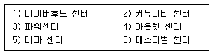
- 1, 2, 3
- 1, 3, 4
- 1, 4, 5
- 1, 4, 6
- 1, 5, 6
(정답률: 35%)
43. 입지의 매력도에 영향을 미치는 요소 중 접근성에 대한 설명 중 올바르지 않은 것은?
- 고객이 얼마나 쉽게 들어오고 나갈 수 있는지를 설명할 수 있는 요소를 접근성이라고 한다.
- 기본 상권을 분석하는 방법으로 도로패턴, 도로상태, 장애 등의 요소를 평가하여야 한다.
- 시장이 한정되거나 고객 충성도가 높을수록 점포 외관이 접근성에 미치는 영향은 증가한다.
- 주차시설의 양과 질, 교통편의시설 등은 점포의 전체적인 접근성에 중요한 요인이 된다.
- 교통량이 많은 입지라도 정체나 시설의 특성 등에 의해 점포 접근성이 제한되기도 한다.
(정답률: 44%)
44. 상권을 정의하는데 필요한 정보의 유형에 대한 설명 중 올바르지 않은 것은?
- 얼마나 많은 사람들이 상권 내에 있으며 각 사람들의 거주지, 이동목적 등은 무엇인지 분석하여야한다.
- 고객스포팅은 점포나 쇼핑센터를 위해 고객의 거주지역을 파악하는 것으로 관련자료는 CRM을 통해 얻을 수 있다.
- 고객들이 제시된 상권에서 얼마나 구매할 것인지에 대한 정보를 얻기 위해 잠재고객을 조사한 인구통계자료가 필요하다.
- 경쟁이 심한 지역에서는 특정 유형의 상품이나 점포에 대한 총 시장잠재력의 일부만 한 점포의 성과로 실현된다.
- 비슷한 점포를 이용하면 필요한 정보를 쉽게 유추할 수 있으며, 다른 정보수집방법에 비해 가장 정확성이 높은 정보를 제공한다.
(정답률: 14%)
45. 다음의 경우 채소구매 점포 선정을 위해 허프(Huff) 모형을 이용한다고 가정할 때 가장 올바른 설명은?
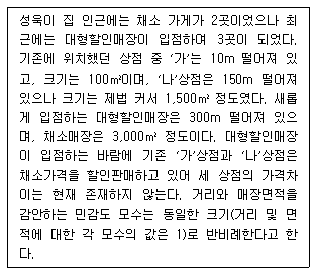
- 대형할인매장이 입점하기 전에는 ‘가’상점이 ‘나’상점보다 더 선호되었다.
- 허프 모형으로 더 선호되는 상점을 찾기 위해서는 추가적인 정보가 필요하다.
- 채소매장만 감안할 때 대형할인매장은 ‘가’와 ‘나’상점에 비해 더 선호될 수 있다.
- 매장크기와 거리를 절충하여 ‘나’상점을 이용하는 것이 가장 합리적인 선택이 된다.
- 허프 모형으로는 성욱이가 어떠한 점포를 선택하게 될지에 대해 예측할 수 없다.
(정답률: 18%)
3과목: 유통마케팅
46. 소매업의 포지셔닝 전략에 대한 설명으로 가장 올바르지 않은 것은?
- 목표 고객에게 가격, 서비스, 품질, 편리성 등을 맞추는 전략이다.
- 소비자의 마음속에 경쟁업자와 차별되는 자기 점포의 이미지를 어떻게 창조할 것인가에 관한 것이다.
- 다른 점포와의 차별화를 위해 물품의 구색을 갖추고 판매 방법을 수립하는 전략이라 할 수 있다.
- 우호적인 이미지를 창조하는 것이 중요하므로 타겟 소비자의 욕구와 좋아하는 이미지를 파악해야한다.
- 경쟁업자에 맞춘 포지셔닝 전략은 소비자에 초점을 맞추기 보다는 특정의 경쟁업자를 모방하거나 회피하려는 전략이다.
(정답률: 11%)
47. 선반진열의 유형에 대한 설명으로 올바르지 않은 것은?
- 샌드위치 진열: 진열대 내에서 잘 팔리는 상품 곁에 이익은 높으나 잘 팔리지 않는 상품을 진열해서 판매를 촉진하는 진열이다.
- 라이트업(right up) 진열: 좌측보다 우측에 진열되어 있는 상품에 시선이 머물기 쉬우므로 우측에 고가격, 고이익, 대용량의 상품을 진열한다.
- 전진입체진열: 상품인지가 가장 빠른 페이스 부분을 가능한 한 고객에게 정면으로 향하게 하는 진열의 원칙이다.
- 브레이크업(break up) 진열: 진열라인에 변화를 주어 고객시선을 유도함으로써 상품과 매장에 주목률을 높이고자 하는 진열이다.
- 트레이팩 진열: 그룹별로 색을 나타낼 때 고객 눈에 쉽게 보이도록 어두운 색에서 밝은 색으로, 탁한 색에서 맑은 색으로, 짙은 색에서 옅은 색으로 진열하는 방식이다.
(정답률: 28%)
48. 고객 커뮤니케이션의 예산수립에 대한 내용 중 가장 올바른 것은?
- 목표-업무 방법은 운영 비용과 이익을 산출한 후에 사용 가능한 금액이 얼마인지에 따라 고객 커뮤니케이션 예산을 설정한다.
- 손대중 방법은 커뮤니케이션 목표를 달성하기 위해 특별한 업무수행에 요구되는 예산을 결정짓는 방법이다.
- 가용 예산 방법을 사용할 때는 먼저 예산 기간 동안의 고객 커뮤니케이션 비용을 제외한 매출과 비용을 예측한다.
- 판매비율 방법에서 고객 커뮤니케이션 예산은 소매업체의 고객 커뮤니케이션 비용 비율과 시장점 유율이 같도록 결정된다.
- 경쟁동가방법은 예상 매출액 중 고정비율로 고객커뮤니케이션 예산을 설정하는 방식이다.
(정답률: 11%)
49. POS시스템에 대한 설명 중 가장 올바르지 않은 것은?
- EOS에 연결시켜 구매발주서를 자동 출력시킬 수 있기 때문에 판매변화가 심한 상품, 일일배송품, 생식품 등에 대해 적절한 구매정책이 가능하다.
- 상품구색이나 매장의 배치에 대한 피드백을 얻음으로써 다시 전략을 수정하는 머천다이징 시스템을 구축할 수 있다.
- 과거의 정보를 분석하고 가공하여 미래의 판매를 예측함으로써 매출을 극대화시킬 수 있는 최적의 판촉전략을 수립할 수 있다.
- 내객수의 변화, 일기변화에 따른 상품매출의 변화, 그리고 객단가의 변화와 같은 관련 구매상품의 동향을 파악하여 시간대별 판매전략을 수립할 수 있다.
- 소매점의 POS시스템에 의해 수집된 판매자료는 전체시장을 대표하지 못하다는 한계를 가지고 있기 때문에 부가가치통신망(VAN)서비스라는 통합 데이터 제공시스템이 도입되고 있다.
(정답률: 24%)
50. 전통형 무점포 소매상에 대한 설명 중 옳지 않은 것은?
- 크게 다이렉트마케팅, 직접판매, 자동판매기 등으로 구분할 수 있다.
- 우편판매는 각종 제조업체나 백화점을 포함하는 점포형 소.도매상들에 의해 기존의 판매방식을 보완하는 수단으로 많이 사용된다.
- 텔레마케팅의 경우 텔레마케터가 적극적으로 고객반응을 창출한다는 점에서 우편판매와 차이가 있다.
- 다단계판매방식의 경우 소비자에게 상품이 인도되기까지 생산과 소비 사이에서 소매업체와 다수의 경로 구성원들이 개입된다.
- 자동판매기의 경우 편의성을 추구하려는 소비자의 욕구를 잘 이용한 것이라 볼 수 있다.
(정답률: 17%)
51. 유통범위(Market Coverage)에 대한 설명으로 가장 올바르지 않은 것은?
- 유통경로 내에서 중간유통기관의 수를 얼마나 할 것인가를 결정하는 것이다.
- 주어진 영역 내에서 중간유통기관을 어느 정도 밀집시키느냐 하는 것이다.
- 중간상이 자사의 제품이나 서비스를 원활하게 요청할 수 있도록 중간상을 조합하는 것이다.
- 집중적 유통경로, 선택적 유통경로, 전속적 유통경로 등의 세 가지 전략적 선택이 있다.
- 제품의 특성, 유통환경, 구매자의 욕구 및 기대수준의 차이로 유통의 범위는 다양하다.
(정답률: 21%)
52. 소매조직의 각 수준별로 성과척도를 다르게 할 필요가 있다. 각 수준을 기업(최고경영자)-상품(상품관리자와 바이어)-점포운영(점포관리자) 등으로 나누었을 때, 각 수준의 성과지표가 기업-상품-점포운영의 순서대로 가장 적절하게 나열된 것은?
- ROI - GMROS - GMROI
- ROA - GMROI - GMROS
- ROI - ROA - GMROS
- GMROS - ROI - GMROI
- ROA - ROI - GMROI
(정답률: 18%)
53. 제품확충전략(Product Filling)의 긍정적 및 부정적 내용과 가장 거리가 먼 것을 고르시오.
- 잉여설비의 활용
- 매출증대
- 다양한 세분시장으로의 침투
- 수익성 감소
- 비용절감
(정답률: 19%)
54. 일반적으로 소매기관이 사용할 수 있는 가격관리전략에 대한 설명 중 가장 옳지 않은 것은?
- 이익극대화 가격결정은 유통구조의 합리적 개선으로 인한 비용절감과 경쟁우위 확보 측면에서의 마케팅전략 등을 활용하여 투자 이익률을 극대화시킬 수 있다.
- 단기수익률극대화 가격결정은 모든 가격정책의 목적을 판매수익의 극대화하는데 둔다.
- 시장점유율극대화 가격결정은 표적시장에서 시장점유율 향상을 목적으로 특정제품에 대한 가격을 정책적으로 인상하여 소비자의 구매를 유도한다.
- 촉진적 가격결정은 이익보다는 제품에 대한 구매를 조장하여 시장점유율을 증대시키기 위한 목적으로 추진한다.
- 경쟁적 가격결정은 경쟁업체들의 가격결정전략에 대응하고 그들과의 가격적인 차별화를 목적으로 하는 것이다.
(정답률: 39%)
55. 다음 상품의 분류기준을 가장 올바르게 차례대로 나열한 것은?
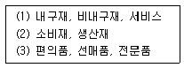
- 물리적 특성 - 사용목적 - 구매활동
- 사용목적 - 구매활동 - 물리적 특성
- 물리적 특성 - 구매활동 - 사용목적
- 사용목적 - 물리적 특성 - 구매활동
- 구매활동 - 사용목적 - 물리적 특성
(정답률: 25%)
56. 수요에 기초한 심리적 가격결정 기법과 그에 대한 설명으로 가장 옳지 않은 것은?
- 홀.짝수가격책정은 소비자가 어떤 가격을 높은 가격 또는 낮은 가격으로 인지하느냐 하는 사실에 기초를 둔다.
- 명성가격 책정은 소비자들은 가격을 품질이나 지위의 상징으로 여기므로 명품 같은 경우 가격이 예상되는 범위 아래로 낮추어지면 오히려 수요가 감소할 수 있다는 사실에 기반을 둔 것이다.
- 비선형가격설정은 일반적으로 대량구매자가 소량 구매자에 비해 가격탄력적이라는 사실에 기반하여 소비자에게 대량구매에 따른 할인을 기대하도록 하여 구매량을 증가시키고자 하는 것이다.
- 손실유도가격결정은 특정 품목의 가격을 인하하면 그 품목의 수익성은 악화될 수 있지만, 보다 많은 고객을 유인하고자 할 때 사용한다.
- 상층흡수가격정책은 시장이 성장기에 있을 때 시장의 상층계층을 목표로 상품에 고가격을 설정함으로써 시장의 경쟁과 마찰을 피하면서 높은 수익을 얻고자 하는 가격정책이다.
(정답률: 21%)
57. 다음에서 설명하는 표본추출방법은?
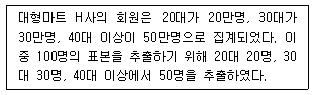
- 판단추출법
- 군집추출법
- 할당추출법
- 편의추출법
- 단순무작위추출법
(정답률: 32%)
58. 구매의사결정과정에서 ‘구매 후 과정’에 대한 설명으로 가장 적절하지 않은 것은?
- 불만족한 소비자는 재구매 의도의 감소뿐만 아니라 다양한 불평행동을 보이며, 소비자들은 자신의 불평행동으로부터 기대되는 이익과 비용을 고려하여 불평행동 유형을 결정한다.
- 귀인이론은 구매 후 소비자가 불만족의 원인을 추적하는데 도움이 되며, 원인이 일시적이고 기업의 통제가 불가능하거나 기업의 잘못이라고 소비자가 생각할수록 더 불만족할 가능성이 높다.
- 제품처분은 소비자들의 처분과 관련된 의사결정이 향후의 제품구매 의사결정에 영향을 주기 때문에 중요하며, 나아가 제품처분 관련 행동은 자원 재활용 측면에서도 중요하다.
- 구매 후 부조화는 소비자가 구매 이후 느낄 수 있는 심리적 불편함을 말하며, 구매결정을 취소할 수 없을 때 발생할 가능성이 높다.
- 기대불일치모형에 의하면, 만족과 불만족은 소비자가 제품사용 후에 내린 평가가 기대 이상이냐 혹은 기대 미만이냐에 따라 결정된다.
(정답률: 22%)
59. 셀프서비스 판매매장(또는 셀프셀렉션 판매매장)과 비교되는 대면판매매장의 특징으로 가장 옳지 않은 것은?
- 판매관리비에서 인건비 비중이 늘어난다.
- 상품에 대한 전문적 지식과 제안판매능력을 갖춘 판매원의 양성이 필요하다.
- 쇼핑빈도가 높은 상품에 적합하다.
- 판매원에 의해 관리되므로 파손, 오손 등을 줄일 수 있다.
- 상세한 설명이 필요한 상품에 적합하다.
(정답률: 34%)
60. 시각적 머천다이징에 대한 설명 중 옳지 않은 것은?
- 점포내외부 디자인도 포함하는 개념이지만 핵심개념은 매장내 전시(display)를 중심으로 이루어진다.
- 상품과 판매환경을 시각적으로 연출하고 관리하는 일련의 활동을 말한다.
- 상품과 점포 이미지가 일관성을 유지할 수 있게 진열하는 것이 중요하다.
- 요소로는 색채, 재질, 선, 형태, 공간 등을 들 수 있다.
- 상품의 포장형태, 상품의 잠재적 이윤보다는 기획 의도나 인테리어와의 전체적 조화 등을 고려하여 이루어진다.
(정답률: 39%)
61. 서비스의 특성 및 그에 따른 서비스 마케팅의 과제에 대한 설명으로 가장 적합하지 않은 것은?
- 일시적으로 제공되는 편익으로 생산하여 그 성과를 저장하거나 재판매할 수 없으며, 판매되지 않은 서비스는 사라진다는 특성을 서비스의 이질성이라 한다.
- 서비스보증이란 고객에게 설명하기 쉬워야 하고, 고객의 이해와 이용이 쉬워야 한다.
- 볼 수도 만질 수도 없으며 쉽게 전시되거나 전달 할 수도 없다는 무형성의 특징을 보이고 있다.
- 비분리성은 대부분의 서비스가 생산과 동시에 소비된다는 특성을 말하며, 이로 인해 수요와 공급을 맞추기가 어렵고 반품될 수 없다.
- 서비스는 무형이고, 서비스기업은 그들이 제공하는 서비스를 다양하게 구성할 수 있으므로 가격구조가 복잡하여 서비스의 준거가격 책정이 어렵다.
(정답률: 22%)
62. 쇼케이스 진열에 대한 설명 중 올바르지 않은 것은?
- 쇼케이스란 상품진열을 목적으로 상점 내에 설치하는 상자형 구조물을 뜻한다.
- 윈도우형 쇼케이스는 쇼윈도와 쇼케이스의 기능을 겸한 형태로 상품제시가 목적이다.
- 카운터형 쇼케이스는 흔한 형태로 보통 유리 선반이 2장 있는 3단계 진열식이다
- 섬형 쇼케이스란 어느 방향에서 보아도 내부의 상품을 볼 수 있는 형태이다.
- 스테이지형 쇼케이스란 점두와 점포 안의 넓은 공간에 설치된 사각형의 형태이다.
(정답률: 12%)
63. 머천다이징에 대한 설명으로 가장 올바르지 않은 것은?
- 제조업자나 중간상인이 그들의 상품을 시장수요에 부응하도록 시도하는 모든 활동을 포함한다.
- 기업의 마케팅 목표를 달성하기 위해 특정상품과 서비스를 가장 효과적인 장소, 시기, 가격 그리고 수량으로 제공하는 일에 관한 계획과 관리이다.
- 최적의 이익을 얻기 위해 상품의 매입, 관리, 판매방식 등에 대한 계획을 세우는 마케팅 활동을 의미한다.
- 도매업뿐만 아니라 백화점 등 소매업에서 널리 채택되고 있다.
- 고객이 실제로 이동하는 경로에 따라 관심과 집중을 받을 수 있게 상품을 배치하거나 진열하는 방법이다.
(정답률: 22%)
64. 성장기에 속한 제품의 마케팅 믹스전략에 대한 설명으로 올바른 것만을 나열한 것은?
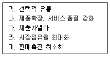
- 가, 나, 다
- 나, 라
- 다, 라, 마
- 나, 마
- 가, 다, 라
(정답률: 29%)
65. 고객서비스 전략에서 사용되는 표준화 접근법에 관하여 가장 올바르게 설명하고 있는 것은?
- 개별 소비자의 취향에 알맞게 맞춤형 서비스를 제공해 줄 수 있는 장점을 가지고 있다.
- 서비스의 품질이 공급자의 주관적 판단과 능력여하에 따라 달라질 수 있는 단점을 가지고 있다.
- 개별 고객에게 뛰어난 서비스 품질을 지속적으로 제공할 수 있는 장점을 가지고 있다.
- 서비스의 품질을 결정하는 다양한 요인들로 인해 발생할 수 있는 이질적인 요인을 최소화 할 수 있다.
- 숙달된 서비스 공급자에 대한 투입과 복잡한 소프트웨어개발 및 활용으로 인한 비용이 많이 발생할 수 있다.
(정답률: 25%)
66. 상품의 진열방법으로 가장 올바르지 않은 것은?
- 품목별 진열: 의류의 경우 사이즈별로 진열을 하면 고객이 상품을 찾기 쉽다.
- 아이디어지향적 진열: 여성의류의 경우 점포의 전체적인 인상을 표현하기 위해 사용하기도 한다.
- 수직적 진열: 눈의 자연스러운 이동에 따라 효과적으로 상품을 진열할 수 있다.
- 적재진열: 고객의 눈길을 끌기 위해 가능하면 상품 전체를 노출하고자 하는 진열방법이다.
- 걸이: 상품을 효과적으로 고정시키고 진열하는 동시에 매장 사이의 경계를 나타내는 방법이다.
(정답률: 23%)
67. 제품전략과 유통관리와의 관계에 대한 설명 중 가장 올바르지 않은 것은?
- 마케팅믹스전략 중 제품전략은 유통구조의 설계와 관리에 가장 중요한 역할을 한다.
- 일반적으로 품질 및 가격과 같은 제품의 특성은 경로길이와 밀접한 관련이 있다.
- 제품의 수명주기 중 성장기에는 제품을 널리 보급하기 위해 집중적 유통전략을 활용한다.
- 강력한 브랜드파워를 가진 제품의 경우 소비자의 브랜드 애호도 및 가격민감도가 높으므로 경로구성원 간의 마찰이 잦다.
- 중간상은 중요한 신제품 아이디어를 제공하고 시장의 반응을 빠르게 제공하는 등 정보원천의 역할을 한다.
(정답률: 41%)
68. 특정 소매업체가 각각의 소매업태에 BCG 매트릭스를 적용한 사례 중 가장 잘못된 것은?
- 할인점 사업부가 상대적 시장점유율은 높으나 시장 성장성이 정체되어 있다면 현금젖소(cash cow)에 해당된다.
- 드럭스토어 사업부가 상대적 시장점유율과 시장성장성이 모두 높다면 스타(star)에 해당된다.
- 편의점 사업부가 상대적 시장점유율과 시장 성장성이 모두 보통이라면 회색(grey)에 해당된다.
- 인터넷 쇼핑몰 사업부가 상대적 시장점유율은 낮으나 시장 성장성이 높다면 물음표(question mark)에 해당된다.
- 모바일 기반 소셜커머스 사업부가 상대적 시장점유율과 시장성장성이 낮다면 개(dog)에 해당된다.
(정답률: 31%)
69. 소비자 구매행동의 유형 중 부조화 감소 구매행동과 가장 거리가 먼 것을 고르시오.
- 소비자의 관여도가 높은 제품을 구매할 때 주로 발생한다.
- 구매 후 결과에 대하여 위험부담이 높은 제품에서 빈번하게 발생한다.
- 주로 고가의 제품이나 전문품을 구매할 때 빈번하게 발생한다.
- 주기적, 반복적으로 구매해야 하는 제품을 구매할 때 빈번하게 발생한다.
- 각 상표 간 차이가 미미한 제품을 구매할 때 빈번하게 발생한다.
(정답률: 32%)
70. 점포 레이아웃에 대한 설명으로 가장 옳지 않은 것은?
- 비품과 통로를 비대칭적으로 배치하는 방법으로, 규모가 작은 전문점 매장이나 여러 개의 작은 전문점 매장이 모여 있는 대형점포에서 주로 채택하는 레이아웃 방식을 격자형배치라 한다.
- 소비자의 본능적 행동양식과 업종 및 업태 그리고점포규모에 따라 적절하게 응용하여 조화를 이루도록, 매장레이아웃의 원칙에 유의하여 매장을 배치하여야 한다.
- 버블계획은 전반적으로 제품을 진열하는 매장 공간, 고객서비스 공간, 창고 등과 같은 점포의 주요 기능공간의 규모와 위치를 간략하게 보여주는 것을 말한다.
- 블록계획은 점포의 각 구성부문의 실제 규모와 형태까지 세부적으로 결정하며, 고객서비스 공간,창고 공간, 기능적 공간 등은 기능적 필요나 크기에 따라 배치한다.
- 격자형배치는 기둥이 많고 기둥 간격이 좁은 상황에서도 설비비용을 절감할 수 있으며, 통로 폭이 동일하므로 건물전체 필요면적이 최소화된다.
(정답률: 15%)
4과목: 유통정보
71. 유통정보시스템 도입의 이점과 가장 거리가 먼 것은?
- 고객과 공급업체간의 더욱 정확한 정보교환을 위해 팀위주로 판매형태가 전환되기도 한다.
- 주문으로부터 배달까지의 시간을 단축시킬 수 있어 고객서비스 수준을 향상시킬 수 있다.
- 주문, 선적, 수취의 정확성을 꾀할 수 있다.
- 주문이 빠르게 전송, 처리되기 때문에 주문내용을 변경하는 데 있어 유연성을 꾀할 수 있다.
- 인건비의 절감을 꾀할 수 있다.
(정답률: 20%)
72. 유통정보시스템 설계과정의 순서가 가장 올바른 것은?
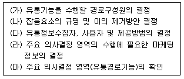
- 가 - 나 - 다 - 라 - 마
- 마 - 가 - 라 - 다 - 나
- 가 - 라 - 나 - 다 - 마
- 마 - 다 - 가 - 라 - 나
- 가 - 나 - 라 - 다 - 마
(정답률: 25%)
73. 고객 만족 수준의 차이에 따라 e-SCM 추구 전략도 달라진다. 고객허용 리드타임보다 공급 리드타임을 단축하는 것이 가능할 경우 e-SCM 추구 전략으로 가장 적합한 것을 고르시오.
- 공급자 주도 재고관리 전략
- 대량 개별화 전략
- 연속 보충 계획 전략
- 동시 계획 전략
- 제3자 물류 전략
(정답률: 6%)
74. e-CRM의 운영적인 기능은 고객과의 상호작용을 하는 활동이다. CRM의 운영적인 기능으로 가장 옳지 않은 것은?
- Customer-directed e-Commerce
- One-to-One Relationship
- Profiling
- Customer Self-Service
- Direct Customer Feedback
(정답률: 15%)
75. 데이터 웨어하우징의 특징으로 가장 거리가 먼 것은?
- 데이터는 의사결정 지원을 위해 합리적인 정보만을 포함하는 세부 주제별로 조직화된다.
- 데이터가 한 번 입력되면 사라지지 않는다.
- 대부분의 데이터 웨어하우징 관련 응용 프로그램들이 실시간으로 운영되지는 않지만, 실시간 처리 역량은 구비되어 있다.
- 다른 운영 데이터베이스에서의 데이터는 일관된 방법으로 부호화하지만, 데이터 웨어하우스에서의 데이터는 다르게 부호화된다.
- 데이터 웨어하우스는 최종사용자에게 데이터의 용이한 접근을 제공하는데 있어서 주로 클라이언트/서버 구조를 사용한다.
(정답률: 25%)
76. POS시스템을 통해 수집된 자료들의 활용 단계를 순차적으로 가장 잘 나열한 것을 고르시오.
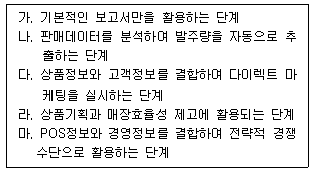
- 가 - 나 - 다 - 라 - 마
- 가 - 다 - 라 - 나 - 마
- 가 - 라 - 다 - 나 - 마
- 가 - 라 - 나 - 다 - 마
- 가 - 다 - 나 - 라 - 마
(정답률: 20%)
77. 디지털 기업 환경의 특징에 대응하기 위한 기업 전략으로 가장 거리가 먼 것을 고르시오.
- 고객이 원하는 콘텐츠를 통합하여 제공한다.
- 고객과의 관계를 지속하기 위해 쌍방향 커뮤니케이션을 도입한다.
- 다수의 고객을 대상으로 그 각각에게 개별화된 제품이나 서비스를 제공한다.
- 고객이 스스로 자신이 원하는 가치를 규정하고 이를 창출하도록 고객을 컨슈머(consumer)화 한다.
- 고객의 니즈(needs)를 충족시키기 위해 고객관계 관리전략을 시행한다.
(정답률: 36%)
78. CMI(Co-Managed Inventory)에 대한 내용 중에서 가장 옳지 않은 것을 고르시오.
- 제조업체와 유통업체 상호간에 제품정보를 공유한다.
- 제조업체가 발주 확정 후 바로 유통업체로 상품배송이 된다.
- 제조업체는 판매 및 재고정보를 공유함으로써 수요예측을 수행하여 지나친 과잉생산을 사전에 예방할 수 있다.
- 판촉활동, 지역여건, 경쟁상황 등을 고려하여 제조업체와 유통업체가 재고수준을 공동으로 관리한다.
- 고객이 필요로 하는 정보를 POS를 통해 파악되고 공유되기 때문에 제조업체와 유통업체간에 부가가치 창출형 정보가 교환된다.
(정답률: 9%)
79. 인터넷 보안사고의 유형에 대한 설명으로 가장 옳지 않은 것을 고르시오.
- Virus: 컴퓨터 내부 프로그램에 자신을 복사했다가 그 프로그램이 수행될 때 행동을 취하며 최악의 경우 프로그램 및 PC의 작동을 방해함.
- Worm: 바이러스와 형태 및 작동이 유사하나 프로그램 및 PC의 작동을 방해하지는 않음.
- Trojan Horse: 일종의 바이러스로 PC 사용자의 정보를 유출함.
- Sniffing: 어떤 프로그램이나 시스템을 통과하기 위해 미리 여러 가지 방법과 수단 또는 조치를 취해두는 방식.
- Spoofing: 어떤 프로그램이 정상적인 상태로 유지되는 것처럼 믿도록 속임수를 쓰는 방식.
(정답률: 33%)
80. 유통정보시스템이 갖추어야 할 요건과 가장 거리가 먼 것은?
- 포괄성과 응용성을 갖춘 정보시스템.
- 정형성과 개방성을 갖춘 정보시스템.
- 적절한 정보의 조직적인 흐름을 통해 유통경영 의사결정의 지원에 적절한 정보시스템.
- 상시적이면서도 급변하는 환경에 신속히 대응할 수 있는 정보시스템.
- 단기적.즉흥적인 문제해결을 위한 정보시스템.
(정답률: 40%)
81. 전자상거래 사이트가 포함해야 하는 기본적인 비즈니스 및 시스템 기능에 대한 설명 중 가장 옳지 않은 것은?
- 디지털 카탈로그: 텍스트와 그래프를 이용하여 사이트에 상품을 전시한다.
- 제품 데이터베이스: 제품설명과 재고번호, 그리고 재고량과 같은 제품정보를 제공한다.
- 판매 데이터베이스: 이름과 주소, 전화번호, 그리고 이메일 주소와 같은 고객정보를 담는다.
- 광고서버: 이메일이나 배너광고를 통하여 들어오는 고객들의 행동을 추적한다.
- 쇼핑카트지불시스템: 주문시스템과 신용카드 결제, 그리고 다른 지불방법을 제공한다.
(정답률: 10%)
82. 전자상거래 시장에 대한 설명으로 가장 부적절한 것은?
- 구조화된 전자상거래란 좁은 의미의 전자상거래를 지칭하며, 표준화된 거래형식과 데이터 교환방식에 따라 조직적.체계적으로 이루어지는 거래로 EDI, EC, CALS, E-mail 등이 있다.
- B2B는 현재 거래주체에 의한 비즈니스 모델 중 거래 규모가 가장 큰 전자상거래 분야로서 기업과 기업이 각종 물품을 판매하는 방식이다. 구매자와 판매자간에 직접 이루어 질 수도, 온라인 중개상을 통해 이루어 질 수도 있다.
- B2C에서는 판매하는 상품의 성격에 따라 제품을 거래하는 사업과 서비스를 제공하는 사업으로 구분할 수 있고, 제품을 거래하는 사업은 다시 물리적 제품의 취급과 디지털제품의 취급으로 나누어 진다.
- B2B2E는 기업 간 거래와 기업과 종업원 간 거래를 결합한 것으로 종업원들이 필요한 제품들을 생산하는 기업들을 모아서 수수료를 받고 입점 시킨 뒤 종업원들을 대상으로 필요한 제품이나 서비스를 제공하는 형태이다.
- B2Bi는 기업과 기업, 기업과 e-Marketplace, e-Marketplace와 e-Marketplace 등 기업 간 전자상거래에서 발생하는 비즈니스 프로세스를 효과적으로 지원하기 위해 전산시스템과 문서 포맷, 애플리케이션을 서로 통합, 연계하는 것이다.
(정답률: 15%)
83. 기업의 고객충성도(Customer Loyalty) 프로그램에 대한 설명으로 가장 옳지 않은 것을 고르시오.
- 충성도의 지표는 기업이 지속적으로 고객에게 타사보다 우월한 가치를 제공함으로써 그 고객이 해당 기업의 브랜드에 호감이나 충성심을 갖게 되어지속적인 구매 활동이 유지되는 것으로, 고객의구매 성향과 추천 의도 및 재구매 의사로 표현된다.
- 우량 고객의 선정을 위해 양적 기준과 질적 기준을 명확히 해야 한다. 우량 고객의 효과적 관리를 위해서는 보상프로그램을 차별 없이 실시하는 것이 바람직하다.
- 고객이 이탈하지 않도록 하고, 고객이 이탈한 경우 그들을 다시 충성고객으로 전환시키는 마케팅활동을 위해 먼저 고객의 유형을 유지고객과 이탈고객으로 분류하고 그들의 특성을 규명하는 작업이 선행되어야 한다.
- 최우량 충성도 고객은 기업의 매출 증대에 커다란 영향을 미치는 고객을 지칭한다. 기업이 이들을 상대로 하는 개별적.현실적인 마케팅 전략이 고객 충성도 프로그램인 것이다.
- 고객의 입장에서 보면 자신이 느끼는 가치에서 지불 비용을 뺀 차이가 얼마인가가 선택의 척도가 된다. 고객이 느끼는 가치를 좌우하는 것이 단지 제품의 품질이나 수량만이 아니기 때문에 가치를 높이기가 쉽지 않다.
(정답률: 34%)
84. Data Warehouse, Data Warehousing, Data Mining, Data Mart에 대한 설명으로 가장 잘못된 것은?
- Data Warehouse는 사용자의 의사결정을 지원하기 위해 기업이 축적한 많은 데이터를 사용자 관점에서 주제별로 통합하여 별도의 장소에 저장해 놓은 데이터베이스로 이해할 수 있다.
- Data Warehousing은 데이터 웨어하우스에 있는 데이터들로부터 적합한 의사결정을 위한 데이터를 구축하고 활용하는 일련의 과정으로, 전사적인 아키텍쳐상에서 의사결정을 지원하기 위한 환경을 구축하는 것이다.
- Data Mining은 데이터 속에 숨어 있는 정보를 추출하여 연관 규칙(Association Rule), 신경망(Neural network) 등을 이용하여 분석하며, 유통정보 분석에 많이 이용된다. 대량의 실제 데이터로부터 잠재되어 드러나지 않은 유용한 정보를 찾아내는 것이다.
- Data Mart는 데이터 웨어하우스 구축의 높은 비용대비 낮은 비용으로 창출할 수 있으며, 주로 전략적 사업단위나 부서를 위해 설계된 작은 규모의 데이터 웨어하우스이다.
- Data Warehouse 내의 데이터는 일단 적재가 완료되면 일괄처리 작업에 의한 갱신 이외에는 DB에 삽입이나 삭제 등의 변경이 수행되지 않는다는 주제 지향성(Subject-Oriented)이 있다.
(정답률: 10%)
85. 발주와 관련 다양한 시스템에 대한 설명으로 가장 옳지 않은 것을 고르시오.
- EOS는 발주자의 컴퓨터에 입력된 주문 자료가 수 신자의 컴퓨터로 직접 전송되도록 구축된 전자주문시스템 또는 자동발주시스템이고, 소매점의 EOS 구축목적은 ‘발주의 시스템화’, ‘품절예방’, ‘점포재고의 적정화’등이다.
- CAO는 POS를 통해 얻어지는 상품흐름에 대한 정보와 계절적인 요인에 의해 소비자 수요에 영향을 미치는 외부요인에 대한 정보를 컴퓨터를 이용 통합.분석하여 주문서를 작성하는 시스템을 말한다.
- Cross Docking은 배달된 상품을 중간저장소인 물류센터에 일정기간 저장을 한 후 소비자들의 요구에 따라 즉시 배송지점으로 배송하는 것을 말한다. 즉, 받은 상품을 창고에 저장한 후 소비자의 주문에 따라서 소매점포로 배송하는 물류시스템이다.
- CRP는 소비자의 수요에 근거해서 제조업체 또는 공급업체가 유통업체의 재고를 자동보충해주는 방식으로, 제조업체 또는 공급업체가 유통업체의 POS 자료를 근거로 상품보충을 하며, 유통업체는 재고보충을 위해 VMI기법을 이용한다.
- CPFR은 소매업자 및 도매업자와 제조업자가 고객서비스를 향상하고 업자들 간에 유통총공급망(SCM)에서의 정보의 흐름을 가속화하여 재고를 감소시키는 경영전략이자 기술이다.
(정답률: 24%)
86. 바코드(Bar Code)에 대한 설명으로 잘못된 것은?
- 두께가 서로 다른 검은 막대와 흰 막대의 조합을 통해 숫자 또는 특수기호를 광학적으로 쉽게 판독하기 위해 부호화한 것으로 정보의 표현, 수집, 해독이 가능하게 된다.
- 문자나 숫자를 나타내는 검은 바와 흰 공간의 연속으로 바와 스페이스를 특정하게 배열해 이진수 0과 1의 비트로 바뀌게 되고 이들을 조합해 정보로 이용하게 되는데, 이들은 심벌지라고 하는 바코드 언어로 정의된 규칙에 의해 만들어진다.
- 바코드가 사용되기 이전에는 OCR(Optical Character Recognition) 또는 MSR(Magnetic Stripe Reader)에 의한 패턴 인식법이나 자기 판독장치에 의해서 알파벳이나 숫자를 식별하는 방법을 사용했다.
- 바코드 스캐너는 어두운바와 밝은바(공간)의 색상을 대조하여 바코드를 판독하기에 검은 색, 군청색, 진한 녹색, 진한 갈색 바에 백색, 군청색, 녹색, 적색 바탕이 가능하다.
- 스캐너 또는 리더 장치를 이용하여 상품의 제조업체, 품명, 가격 등을 정확.간단하며 쉽게 읽어 들 일 수 있도록 고안된 것이다.
(정답률: 40%)
87. 유통정보혁명 시대에서 괄호 안에 들어갈 가장 적합한 내용은?
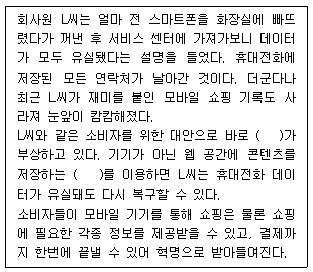
- Cloud Service
- CRM Service
- After Service
- Before Service
- Ming Service
(정답률: 46%)
88. 지식은 형식지(Explicit Knowledge)와 암묵지(Implicit Knowledge) 로 구분되는데 가장 옳지 않은 것은? (문제 오류로 실제 시험에서는 모두 정답 처리 되었습니다. 여기서는 1번을 누르면 정답 처리 됩니다.)
- 형식지는 손쉽게 서류화할 수 있는 사실이다.
- 형식지는 무엇을 아는 것(know-what)이다.
- 암묵지는 방법을 아는 것(know-how)이다.
- 암묵지는 인간의 두되 속에 있으며 상호행위를 통해 표출되어 진다.
- 암묵지는 가치, 판단 및 직관에 의해서 창출되는 주관적 지식이다.
(정답률: 45%)
89. 전자결제 서비스와 거래안전장치(Escrow)서비스에 대한 설명으로 가장 옳지 않은 것을 고르시오.
- 전자결제시스템은 결제수단에 따라 신용카드결제 시스템, 전자화폐결제시스템, 전자수표결제시스템, 전자자금이체시스템 등으로 구분할 수 있으며, 현재 전자상거래의 주된 대금결제방식으로 그 통용성이 인정되고 있다.
- 전자화폐는 일반적으로 유통성, 양도가능성, 범용성, 익명성 등 현금의 기능을 갖추고 있다. 뿐만아니라 원격 송금성, 수송상의 비용절감, 금액의 분할 및 통합의 유연성, 전자성 등의 특징과 현금의 단점을 보완하는 기능을 가지고 있다.
- SSL(Secure Sockets Layer)은 인터넷 프로토콜의 보안문제를 극복하기 위해 개발되어, 현재 전 세계의 인터넷 상거래 시 요구되는 개인 정보와 크레디트카드 정보의 보안 유지에 가장 많이 사용되고 있다.
- IC카드형 전자화폐는 화폐 가치이전 가능성에 따라 개방형과 폐쇄형으로 나누고, 개방형은 카드상호간 가치이전이 가능하고 폐쇄형은 불가능 하다. 비자캐시, 몬덱스, 아방트, 프로튼, 덴몬트 중 몬덱스는 폐쇄형, 나머지는 개방형이다.
- 에스크로서비스는 쇼핑몰(전자)보증보험과 같은 소비자피해 보상보험과는 근본적인 차이가 있다.즉, 구매자뿐 아니라 판매자가 입을 수 있는 피해도 예방하여 거래의 양 당사자를 모두 보호하는 성격이 강하다.
(정답률: 25%)
90. ‘점포에 그대로 진열할 수 있도록 가격 태그(tag)가 부착된 상품이 행거(hanger)와 함께 물류센터를 경유하지 않고 공장으로부터 소매점포로 직접 보내는 것’과 가장 일치하는 것은?
- FRM(Floor Ready Merchandise)
- SCM(Shipping Carton Marketing)
- ASN(Advanced Shipping Notice)
- 크로스도킹(Cross Docking)
- TA 링크(Textile Apparel Linkage)
(정답률: 29%)
이유: 이는 소비자의 안전과 건강을 보호하기 위한 가장 기본적인 내용이기 때문이다. 소비자는 제품이나 서비스를 이용할 때 안전하고 건강에 해를 끼치지 않아야 하며, 이를 위해 국가 및 지방단체는 제품 안전성 검사, 위해성 정보 제공, 안전 규제 등의 조치를 강구해야 한다. 이는 소비자의 권리와 이익을 보호하고, 안전한 소비환경을 조성하는 데 중요한 역할을 한다.